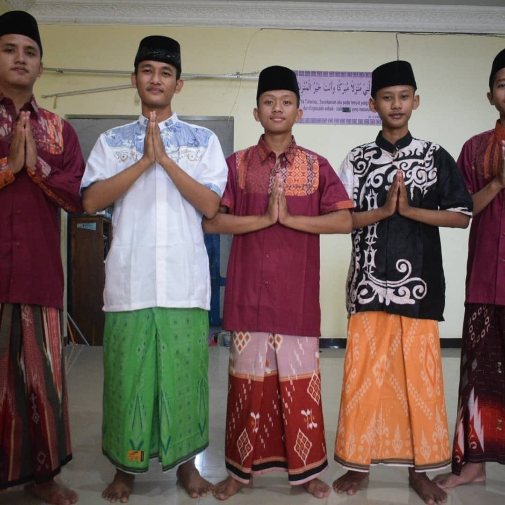

Berawal dari pengalaman hidup selama 18 tahun sang pendiri, ia melihat bahwa berita yang
memenuhi media massa bahkan internet sekarang banyak yang tidak sesuai dengan angka
kecukupan asupan untuk informasi islami terkini yang dibutuhkan ummat islam millenial.
banyak dari berita harian di internet kebanyakan menyorot kasus-kasus kekerasan,
perceraian, western life style yang kian hari makin melenceng dari ajaran agama Islam
dan ini merupakan efek negatif yang di inginkan oleh barat yang disebarkan melalui
internet, ditambah pengguna internet tidak hanya orang dewasa yang menggunakanya untuk
pekerjaan tapi segala usia manusia dari anak-anak sampai orang tua akan mendapat dampak
efek negatif internet yang terjadi saat ini.
Jadi sang pendiri ingin membuat suatu media informasi yang memberi informasi-informasi islami
dan bernilai positif bagi kehidupan Ummat Muslim terkini, hingga akhirnya terbuatlah SKS News
media pemersatu ummat muslim terkini yang memberikan info-info terkini seputar dunia islami
dan Internasional yang akan di kemas secara menarik dan aktual dari sumber-sumber terpercaya
dan baik di bidangnya, agar dapat memberikan pembaca pengalaman tentang kejadian seperti ikut
mengalami kejadian tersebut.
kami akan terus mengembangkan diri agar dapat memberikan pelayanan membaca informasi yang lebih
baik untuk kedepanya kepada para pembaca sekalian, dan agar dapat membuka wawasan ummat muslim
tentang pengetahuan islami agar dapat mebuat lingkungan islami dan meningkatkan kualitas ummat
muslim supaya lebih mendekatkan diri kepada allah S.W.T. dan agar semua yang kita baca dari web
ini dapat bermanfaat bagi kita semua.
 pendiri SKS News : Surya Kamal Sholihin
Media Pemersatu Ummat
Copyright © 2021 SKS'CO